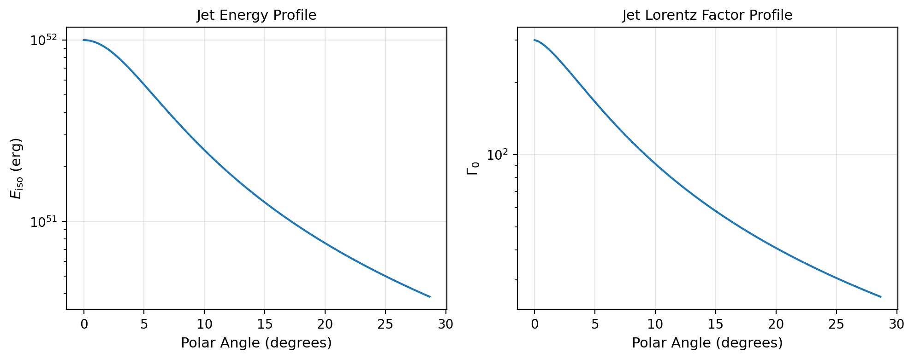
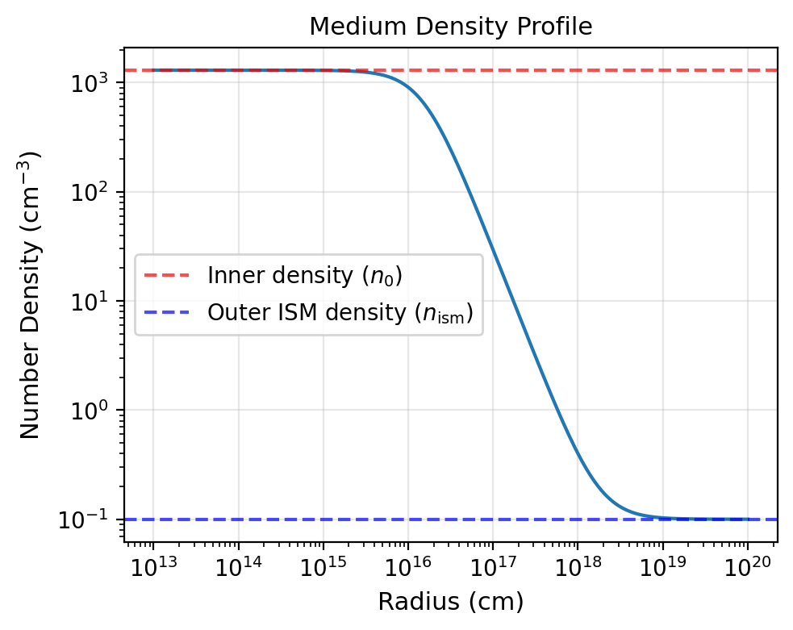
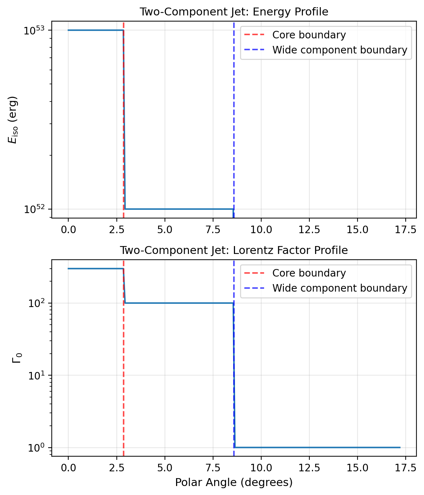

Model Configuration Introspection
VegasAfterglow provides introspection methods to examine jet and medium properties at specific coordinates. These methods are useful for understanding model configuration, validating parameters, and creating diagnostic plots.
Jet Property Introspection
You can examine the angular dependence of jet properties using the jet_E_iso and jet_Gamma0 methods:
import numpy as np
import matplotlib.pyplot as plt
from VegasAfterglow import PowerLawJet, ISM, Observer, Radiation, Model
# Create a power-law jet for demonstration
jet = PowerLawJet(theta_c=0.1, E_iso=1e52, Gamma0=300, k_e=2.0, k_g=1.5)
medium = ISM(n_ism=1)
obs = Observer(lumi_dist=1e26, z=0.1, theta_obs=0)
rad = Radiation(eps_e=1e-1, eps_B=1e-3, p=2.3)
model = Model(jet=jet, medium=medium, observer=obs, fwd_rad=rad)
# Define angular coordinates
phi = 0.0 # Azimuthal angle (for axisymmetric jets, phi doesn't matter)
theta = np.linspace(0, 0.5, 100) # Polar angles from 0 to 0.5 radians
# Get jet properties
E_iso_profile = model.jet_E_iso(phi, theta) # Isotropic energy [erg]
Gamma0_profile = model.jet_Gamma0(phi, theta) # Initial Lorentz factor
# Create visualization
fig, (ax1, ax2) = plt.subplots(1, 2, figsize=(10, 4))
# Plot energy profile
ax1.semilogy(np.degrees(theta), E_iso_profile)
ax1.set_xlabel('Polar Angle [degrees]')
ax1.set_ylabel(r'$E_{\rm iso}$ [erg]')
ax1.set_title('Jet Energy Profile')
ax1.grid(True, alpha=0.3)
# Plot Lorentz factor profile
ax2.semilogy(np.degrees(theta), Gamma0_profile)
ax2.set_xlabel('Polar Angle [degrees]')
ax2.set_ylabel(r'$\Gamma_0$')
ax2.set_title('Jet Lorentz Factor Profile')
ax2.grid(True, alpha=0.3)
plt.tight_layout()
plt.show()
{kind=link}

Angular profiles of isotropic-equivalent energy (left) and initial Lorentz factor (right) for a power-law jet.
Medium Density Introspection
You can examine the radial dependence of medium density using the medium method:
from VegasAfterglow import Wind
# Create a wind medium for demonstration
wind = Wind(A_star=1.0, n_ism=0.1, n0=1e3, k_m=2)
# Note: This creates a stratified wind: inner constant density n0,
# middle r^-2 profile, outer constant density n_ism
# Create model with wind medium
model = Model(jet=jet, medium=wind, observer=obs, fwd_rad=rad)
# Define radial coordinates
phi = 0.0
theta = 0.1 # 0.1 radians off-axis
r = np.logspace(15, 20, 100) # Radii from 10^15 to 10^20 cm
# Get medium density profile
rho_profile = model.medium(phi, theta, r) # Density [g/cm³]
# Convert to number density (assuming pure hydrogen)
n_profile = rho_profile / (1.67e-24) # [cm^-3]
# Create visualization
plt.figure(figsize=(8, 6))
plt.loglog(r, n_profile)
plt.xlabel(r'Radius [cm]')
plt.ylabel(r'Number Density [cm$^{-3}$]')
plt.title('Medium Density Profile')
plt.grid(True, alpha=0.3)
# Add annotations for different regions
plt.axhline(1e3, color='red', linestyle='--', alpha=0.7, label='Inner constant density')
plt.axhline(0.1, color='blue', linestyle='--', alpha=0.7, label='Outer ISM density')
plt.legend()
plt.show()
{kind=link}

Stratified wind medium density profile showing the smooth transition from inner constant density to outer ISM density.
Two-Component Jet Analysis
For complex jet structures like two-component jets, introspection is particularly useful:
from VegasAfterglow import TwoComponentJet
# Create a two-component jet
jet = TwoComponentJet(
theta_c=0.05, # Narrow component
E_iso=1e53,
Gamma0=300,
theta_w=0.15, # Wide component
E_iso_w=1e52,
Gamma0_w=100
)
model = Model(jet=jet, medium=medium, observer=obs, fwd_rad=rad)
# Examine the jet structure
theta = np.linspace(0, 0.3, 200)
E_iso_profile = model.jet_E_iso(0, theta)
Gamma0_profile = model.jet_Gamma0(0, theta)
# Create detailed visualization
fig, (ax1, ax2) = plt.subplots(2, 1, figsize=(8, 8))
# Energy profile
ax1.semilogy(np.degrees(theta), E_iso_profile)
ax1.axvline(np.degrees(0.05), color='red', linestyle='--', alpha=0.7, label='Core boundary')
ax1.axvline(np.degrees(0.15), color='blue', linestyle='--', alpha=0.7, label='Wide component boundary')
ax1.set_ylabel(r'$E_{\rm iso}$ [erg]')
ax1.set_title('Two-Component Jet: Energy Profile')
ax1.legend()
ax1.grid(True, alpha=0.3)
# Lorentz factor profile
ax2.semilogy(np.degrees(theta), Gamma0_profile)
ax2.axvline(np.degrees(0.05), color='red', linestyle='--', alpha=0.7, label='Core boundary')
ax2.axvline(np.degrees(0.15), color='blue', linestyle='--', alpha=0.7, label='Wide component boundary')
ax2.set_xlabel('Polar Angle [degrees]')
ax2.set_ylabel(r'$\Gamma_0$')
ax2.set_title('Two-Component Jet: Lorentz Factor Profile')
ax2.legend()
ax2.grid(True, alpha=0.3)
plt.tight_layout()
plt.show()
{kind=link}

Two-component jet structure showing the narrow core and wide component boundaries for both energy (top) and Lorentz factor (bottom).
These introspection methods are essential for:
Model validation: Ensuring jet and medium configurations match your intentions
Parameter studies: Understanding how changes in parameters affect the structure
Publication plots: Creating clean visualizations of model configurations
Debugging: Identifying issues with complex multi-component setups
Physical understanding: Gaining insight into the initial conditions of your simulations